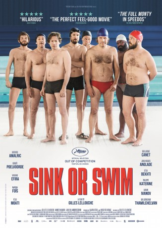

#11978 Ein Becken voller Männer
Alternativ: Sink or Swim
 
 IMDB-Wertung: 7.0 / 10
IMDB-Wertung: 7.0 / 10  Metascore: 47
Metascore: 47 
It is in the corridors of their municipal swimming pool that Bertrand, Marcus, Simon, Laurent, Thierry and the others train under the relative authority of Delphine, former glory of the basins. Together, they feel free and helpful. They will put all their energy into a discipline previously owned by women: synchronized swimming. So, yes it's a weird idea, but this challenge will allow them to find meaning in their lives...
Jahr: 2018
Dauer: 121 Minuten
FSK: 6
Land: Belgien Studio: StudioCanalTonspuren:
Untertitel: Deutsch,
Auflösung: 1080p (1920x804) Größe: 9379 MB
Genre: Drama, Komödie, Sport
Regisseur: Gilles Lellouche
Drehbuch: Ahmed Hamidi, Julien Lambroschini, Gilles Lellouche, Gilles Lellouche
Soundtrack: Jon Brion
Darsteller:
 Mathieu Amalric als Bertrand
Mathieu Amalric als Bertrand Guillaume Canet als Laurent
Guillaume Canet als Laurent Benoît Poelvoorde als Marcus
Benoît Poelvoorde als Marcus Jean-Hugues Anglade als Simon
Jean-Hugues Anglade als Simon Virginie Efira als Delphine
Virginie Efira als Delphine Leïla Bekhti als Amanda
Leïla Bekhti als Amanda Marina Foïs als Claire
Marina Foïs als Claire- Jonathan Zaccaï als Thibault
- Mélanie Doutey als Clem
- Erika Sainte als Diane
 Virgile Bramly als Med Delphine
Virgile Bramly als Med Delphine Xavier Alcan als L'ortophoniste
Xavier Alcan als L'ortophoniste- Pierre Pirol als Homme salle des fêtes
- Ibrahim Koma als Technicien piscine
- Maximilien Poullein als Speaker championnat
- Floriane Karger als
- Angélique Meyns als Hôtesse (credit only)
- Anderz Eide als Policier norvégien (uncredited)
- Philippe Katerine als Thierry
- Félix Moati als John
- Alban Ivanov als Basile
- Balasingham Thamilchelvan als Avanish
- Noée Abita als Lola
- Claire Nadeau als La mère de Laurent
- Caroline Grant als La fille de Bertrand
- Guillaume Cloud-Roussel als Le fils de Bertrand
- Mathieu Torloting als Romain
- Arno Feffer als Roadie
- Vincent Darmuzey als Employé Piscin'Love
- Karim Adda als Présentateur gala
- Élodie Hesme als Amoureuse Marcus
- Stéphane Rouabah als Vigile supermarché 1
- Sami Zitouni als Vigile supermarché 2
- Vincent Varinier als Policier national
- Alexandre Camarasa als Water Polo
- Xavier Claudon als Employé réfectoire
- Claire Conty als Voisine Bertrand
- Sam Lellouche als Collègue Jean-Luc
- Édouard Rerolle als Copain fils Bertrand
- Charlotte Levy als La fille à lunettes
- Antoine Charneau als Homme lunettes carrées
- Fiorella Campanella als Fille 'jamais aimé'
- Alexandre Courtès als Homme couple d'amis
- Emma Philippe als Femme couple d'amis
- Hervé Colombel als Alcoolique anonyme 1
- Jean Chatillon als Alcoolique anonyme 2
- Roselyne Geslot als Alcoolique anonyme 3
- Gökçe Akgün als Doublure chorégraphie championnat
- Renan Alcantara als Doublure chorégraphie championnat
- Marie Annequin als Doublure chorégraphie championnat
Datei: X:\2018(A-F)\Becken voller Männer, Ein (2018, FSK6, 1920x804).mkv seit 01.11.2019
Festplatte: HD 2017(A-Z)-2018(A-F)
 Es gibt insgesamt 151 Filme in der Gruppe '2018(A-F)'
Es gibt insgesamt 151 Filme in der Gruppe '2018(A-F)'